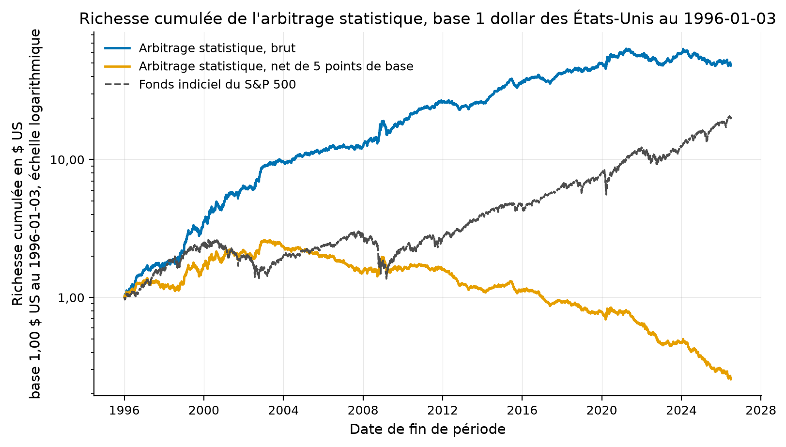
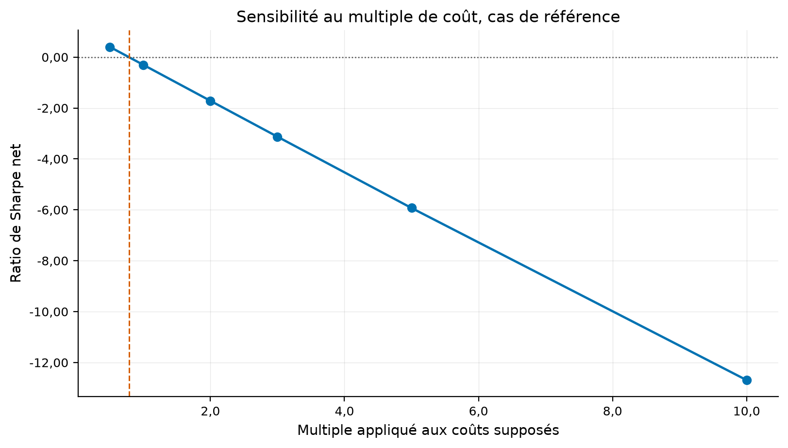
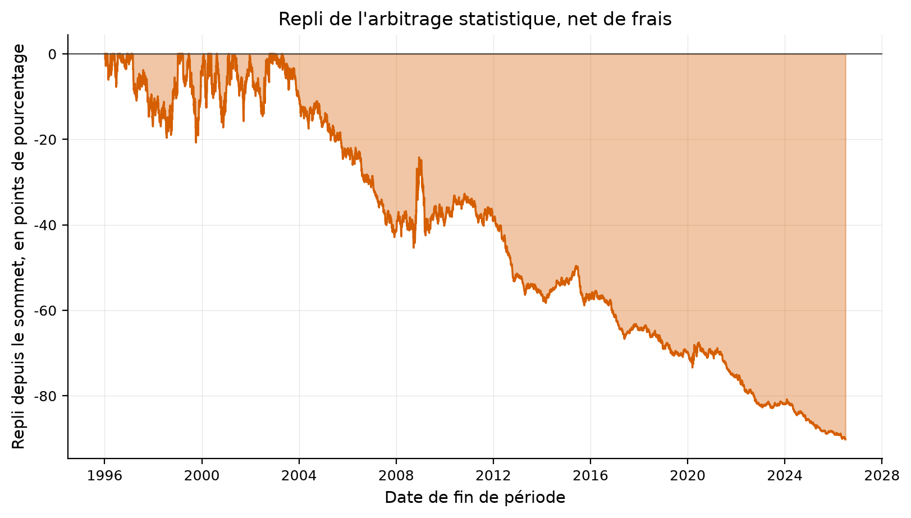
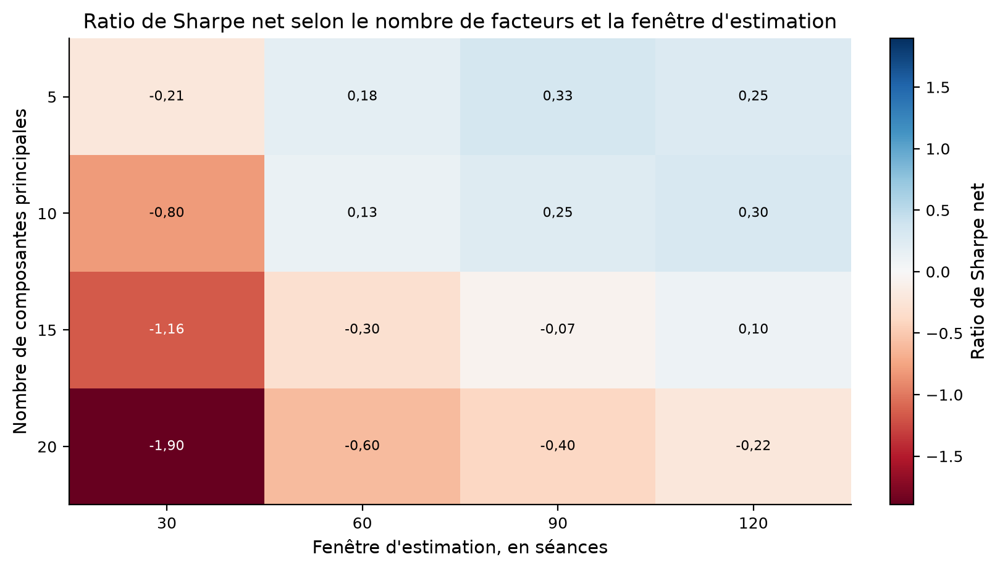
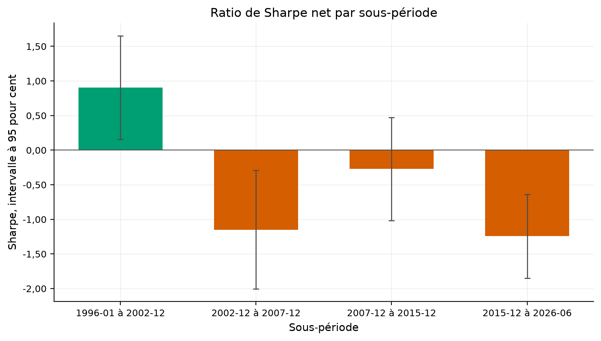
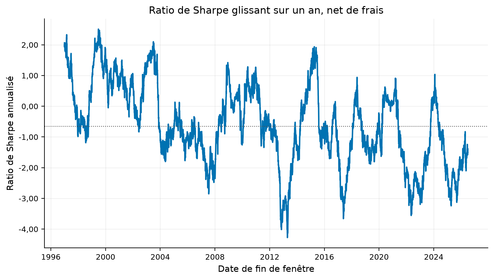
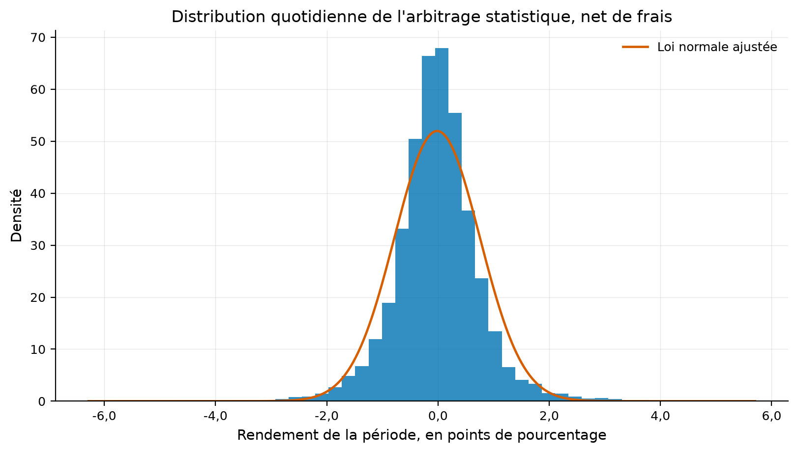
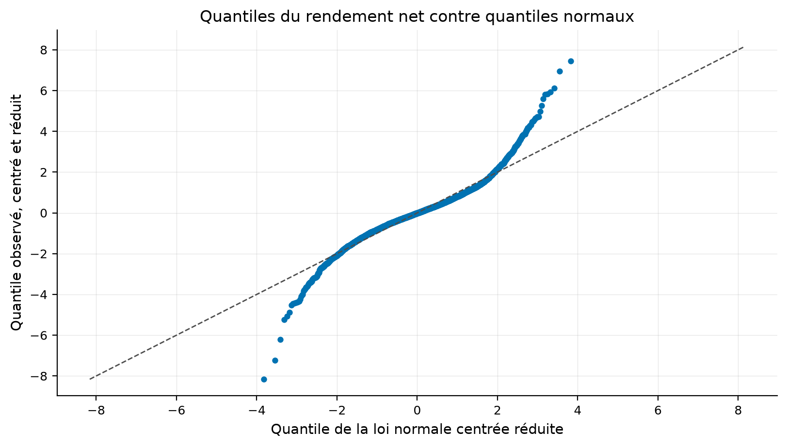

13. L'attribution factorielle
La corrélation quotidienne avec le fonds indiciel vaut 0.177, la couverture par les portefeuilles propres étant déjà faite dans les poids.

Verdict : REJECTED
Le résidu d'une action face aux composantes principales de son univers revient-il à sa moyenne assez vite, et assez loin, pour payer la rotation qu'il exige ?
Avellaneda et Lee (2010), Statistical Arbitrage in the US Equities Market, Quantitative Finance 10(7), 761-782.
Analyse en composantes principales sur une fenêtre glissante d'un an, régression du titre sur les facteurs sur soixante séances, modèle de retour à la moyenne sur le résidu cumulé, et règle tout ou rien sur le s-score.
Cours de clôture quotidiens ajustés de grandes capitalisations américaines, fournisseur Yahoo. L'univers est choisi parmi les titres qui cotent encore, et le biais du survivant est déclaré.
| threshold | n_available |
|---|---|
| 1996-01-02 | 187 |
| 1998-01-02 | 192 |
| 2000-01-03 | 201 |
| 2005-01-03 | 215 |
| 2010-01-04 | 218 |
| symbol | returned | first_day | last_day | n_days |
|---|---|---|---|---|
| LEH | False | 0 | ||
| BSC | False | 0 | ||
| ENE | False | 0 | ||
| WCOM | False | 0 | ||
| EK | False | 0 | ||
| NT | False | 0 | ||
| MON | False | 0 | ||
| RTN | False | 0 | ||
| UTX | False | 0 | ||
| CELG | False | 0 | ||
| ABC | False | 0 | ||
| ATVI | False | 0 | ||
| SYMC | False | 0 | ||
| DPS | False | 0 | ||
| GMGMQ | False | 0 | ||
| AET | True | 1995-12-14 | 2018-11-29 | 5781 |
| ESRX | True | 1995-01-03 | 2018-12-21 | 6027 |
| TWX | True | 1995-01-03 | 2018-06-15 | 5893 |
La stratégie vit dans quantlab.strategies.statistical_arbitrage. Toute grandeur datée du jour n'emploie que les rendements de ce jour et des précédents, et la détention se décale d'une séance dans le moteur de backtest.
Un titre qui cesse de coter est réputé liquidé à son dernier cours. Le levier ne coûte rien de plus que la rotation, et l'emprunt de titres est gratuit.
Le ratio de Sharpe net sur la fenêtre de l'article vaut 0.18 contre 1,44 publié.
| quantity | published | ours | absolute_error | relative_error | tolerance | tolerance_kind | verdict | source |
|---|---|---|---|---|---|---|---|---|
| ratio de Sharpe, 15 composantes, 1997-2007 | 1.44 | 0.181017 | 1.258983 | 0.874294 | 0.5 | relative | écart | Avellaneda et Lee (2010), Quantitative Finance 10(7), table 6, page 774 |
| ratio de Sharpe, 15 composantes, 2003-2007 | 0.90 | -1.180545 | 2.080545 | 2.311716 | 0.5 | relative | écart | Avellaneda et Lee (2010), Quantitative Finance 10(7), résumé page 761 et table 6 |
| ratio de Sharpe, 1 portefeuille propre, 2002-2007 | 0.70 | -0.120743 | 0.820743 | 1.172491 | 0.5 | relative | écart | Avellaneda et Lee (2010), Quantitative Finance 10(7), table 8, page 776 |
| ratio de Sharpe, 55 pour cent de variance, 2002-2007 | 0.70 | -0.666167 | 1.366167 | 1.951667 | 0.5 | relative | écart | Avellaneda et Lee (2010), Quantitative Finance 10(7), table 8, page 776 |
| ratio de Sharpe, 65 pour cent de variance, 2002-2007 | 0.40 | -1.009694 | 1.409694 | 3.524234 | 0.5 | relative | écart | Avellaneda et Lee (2010), Quantitative Finance 10(7), table 8, page 776 |
| temps de retour à la moyenne médian, en séances | 7.00 | 7.559373 | 0.559373 | 0.079910 | 3.0 | absolute | répliqué | Avellaneda et Lee (2010), Quantitative Finance 10(7), page 771 |
| volatilité d'équilibre du résidu, en points de base | 300.00 | 209.941557 | 90.058443 | 0.300195 | 150.0 | absolute | répliqué | Avellaneda et Lee (2010), Quantitative Finance 10(7), page 771 |
| nombre de facteurs à 55 pour cent de variance | 20.00 | 11.000000 | 9.000000 | 0.450000 | 10.0 | absolute | répliqué | Avellaneda et Lee (2010), Quantitative Finance 10(7), conclusion pages 779 et 780 |
| year | n_days | sharpe_gross | sharpe_net | paper_sharpe | return_net_annual_pct |
|---|---|---|---|---|---|
| 1996 | 253 | 3.269612 | 1.944555 | 26.770107 | |
| 1997 | 253 | 0.914533 | -0.451552 | 1.4 | -5.748953 |
| 1998 | 252 | 1.571381 | 0.453581 | 1.4 | 7.143959 |
| 1999 | 252 | 2.813482 | 1.743229 | 0.2 | 30.136372 |
| 2000 | 252 | 1.483477 | 0.686515 | 2.2 | 15.108555 |
| 2001 | 248 | 1.895132 | 0.802533 | 2.6 | 13.375861 |
| 2002 | 252 | 2.463878 | 1.257734 | 3.4 | 17.888914 |
| 2003 | 252 | 0.807525 | -1.064381 | 0.9 | -9.678554 |
| 2004 | 252 | 1.249753 | -0.723335 | 2.2 | -6.343049 |
| 2005 | 252 | 1.032745 | -1.076782 | 1.2 | -8.777221 |
| 2006 | 251 | 0.877038 | -1.076881 | 1.0 | -9.252373 |
| 2007 | 251 | 0.041840 | -1.996856 | -0.7 | -16.630720 |
| 2008 | 253 | 1.961286 | 1.123913 | 23.197970 | |
| 2009 | 252 | 0.038008 | -1.114230 | -17.378533 | |
| 2010 | 252 | 3.449833 | 1.115486 | 8.276375 | |
| 2011 | 252 | 1.149369 | -0.752707 | -6.707695 | |
| 2012 | 250 | -0.900320 | -3.141896 | -23.735806 | |
| 2013 | 252 | 1.073456 | -1.310551 | -9.484009 | |
| 2014 | 252 | 3.649663 | 1.146155 | 7.982144 | |
| 2015 | 252 | 1.085620 | -0.851159 | -7.313229 | |
| 2016 | 252 | 0.633377 | -1.580072 | -12.393041 | |
| 2017 | 251 | 1.335163 | -1.133930 | -7.669592 | |
| 2018 | 251 | 0.365863 | -1.476939 | -13.361615 | |
| 2019 | 252 | 1.764904 | -0.252028 | -2.171486 | |
| 2020 | 253 | 1.026850 | 0.112432 | 2.063309 | |
| 2021 | 252 | -0.281067 | -2.216445 | -19.738972 | |
| 2022 | 251 | -1.490470 | -2.990289 | -32.761380 | |
| 2023 | 250 | 1.965771 | 0.205978 | 1.990417 | |
| 2024 | 252 | -0.511022 | -2.028385 | -22.111014 | |
| 2025 | 250 | -0.486478 | -1.917158 | -21.598816 | |
| 2026 | 123 | -0.821596 | -2.010842 | -29.867112 |
Tous les chiffres portent leur échantillon et leur base de coût dans le tableau des métriques.
| metric | value | sample | cost_basis |
|---|---|---|---|
| cout_de_rentabilite_bps | 3.920982 | IS | gross |
| rotation_annuelle_somme_entiere | 344.041253 | IS | gross |
| sharpe_net_fenetre_de_larticle | 0.181017 | IS | net |
| sharpe_net_1997_2002 | 0.777399 | IS | net |
| sharpe_net_2003_2007 | -1.180545 | IS | net |
| sharpe_net_apres_publication | -1.060164 | OOS | net |
| sharpe_brut_fenetre_de_larticle | 1.459590 | IS | gross |
| rendement_brut_annuel_pct | 13.503228 | IS | gross |
| volatilite_annuelle_pct | 12.188038 | IS | net |
| pire_repli_pct | -90.203270 | IS | net |
| beta_au_marche | 0.112416 | IS | net |
| correlation_au_marche | 0.177319 | IS | net |
| temps_de_retour_median_seances | 7.559373 | IS | gross |
| demi_vie_mediane_seances | 5.239758 | IS | gross |
| probabilite_de_surapprentissage | 0.014286 | VALIDATION | net |
| sharpe_degonfle | 0.000000 | OOS | net |
| t_apres_correction | -4.200874 | OOS | net |
| part_de_sous_periodes_positives | 0.250000 | VALIDATION | net |
| cpcv_sharpe_moyen | 0.150133 | OOS | net |
| cpcv_part_de_chemins_negatifs | 0.000000 | OOS | net |
| window | start | end | n_days | sharpe_gross | sharpe_net | tstat_net | return_net_annual_pct | vol_annual_pct | max_drawdown_pct |
|---|---|---|---|---|---|---|---|---|---|
| paper | 1997-01-02 | 2007-12-31 | 2767 | 1.459590 | 0.181017 | 0.587642 | 2.467212 | 13.629701 | -42.867394 |
| paper_early | 1997-01-02 | 2002-12-31 | 1509 | 1.840540 | 0.777399 | 1.865747 | 12.970665 | 16.684691 | -20.754936 |
| paper_late | 2003-01-02 | 2007-12-31 | 1258 | 0.806762 | -1.180545 | -2.695679 | -10.131923 | 8.582413 | -42.867394 |
| table8 | 2002-01-02 | 2007-12-31 | 1510 | 1.189361 | -0.558441 | -1.297760 | -5.455598 | 9.769331 | -42.867394 |
| crisis | 2008-01-02 | 2009-12-31 | 505 | 1.123466 | 0.160978 | 0.215915 | 2.949893 | 18.324790 | -24.129384 |
| post_publication | 2010-01-04 | 2026-06-30 | 4147 | 0.650253 | -1.060164 | -4.200874 | -10.497271 | 9.901554 | -85.445855 |

Le coût qui annule le rendement brut vaut 3.92 points de base par unité négociée, contre les 5 points de base que l'article retient.
| breakeven_cost_bps | turnover_annual_full_sum | gross_return_annual_pct | cost_bps | sharpe_net_full | sharpe_net_paper | sharpe_net_post_publication | return_net_annual_pct |
|---|---|---|---|---|---|---|---|
| 3.920982 | 344.041253 | 13.503228 | 0.0 | 1.107096 | 1.459590 | 0.650253 | 13.503228 |
| 3.920982 | 344.041253 | 13.503228 | 1.0 | 0.825053 | 1.203988 | 0.308358 | 10.061110 |
| 3.920982 | 344.041253 | 13.503228 | 2.0 | 0.542880 | 0.948313 | -0.033676 | 6.618993 |
| 3.920982 | 344.041253 | 13.503228 | 5.0 | -0.304180 | 0.181017 | -1.060164 | -3.707361 |
| 3.920982 | 344.041253 | 13.503228 | 10.0 | -1.716299 | -1.097709 | -2.769600 | -20.917951 |
| 3.920982 | 344.041253 | 13.503228 | 20.0 | -4.530946 | -3.647307 | -6.163474 | -55.339130 |

Le nombre de facteurs, la fenêtre d'estimation, la fenêtre de corrélation, la fréquence de réestimation, le filtre de vitesse et les seuils sont balayés.
| configuration | n_days_total | sharpe_gross_full | sharpe_net_full | return_gross_annual_pct | return_net_annual_pct | sharpe_net_paper | sharpe_net_paper_early | sharpe_net_paper_late | sharpe_net_table8 | sharpe_net_crisis | sharpe_net_post_publication | n_components | estimation_window | turnover_annual_full_sum | breakeven_cost_bps |
|---|---|---|---|---|---|---|---|---|---|---|---|---|---|---|---|
| nc5_ew30 | 7672 | 1.236435 | -0.212970 | 18.897521 | -3.253210 | 0.763930 | 1.492952 | -0.796192 | -0.583702 | -0.573948 | -1.114741 | 5 | 30 | 442.487026 | 4.270724 |
| nc5_ew60 | 7672 | 1.114381 | 0.181006 | 17.498182 | 2.841869 | 0.696938 | 1.447203 | -0.904451 | -0.203655 | 0.164352 | -0.294561 | 5 | 60 | 292.648436 | 6.004845 |
| nc5_ew90 | 7672 | 1.131280 | 0.330641 | 17.794639 | 5.200703 | 0.696356 | 1.214614 | -0.458864 | -0.085314 | 1.664482 | -0.331450 | 5 | 90 | 251.128427 | 7.104857 |
| nc5_ew120 | 7672 | 0.999378 | 0.252605 | 15.906934 | 4.018493 | 0.749256 | 1.368575 | -0.560885 | -0.315443 | 1.001060 | -0.377998 | 5 | 120 | 237.252877 | 6.698581 |
| nc10_ew30 | 7672 | 1.073277 | -0.801918 | 13.828155 | -10.321920 | 0.111423 | 0.912672 | -1.672212 | -1.092193 | -1.077673 | -1.762047 | 10 | 30 | 482.892829 | 2.863077 |
| nc10_ew60 | 7672 | 1.322172 | 0.129930 | 17.820872 | 1.750468 | 0.772748 | 1.484213 | -0.723316 | -0.331724 | 0.372499 | -0.573805 | 10 | 60 | 321.224951 | 5.562101 |
| nc10_ew90 | 7672 | 1.265407 | 0.248929 | 17.305551 | 3.403549 | 0.767733 | 1.306716 | -0.397201 | -0.027414 | 0.811568 | -0.418922 | 10 | 90 | 277.884740 | 6.234710 |
| nc10_ew120 | 7672 | 1.262992 | 0.304921 | 17.385075 | 4.195397 | 0.983918 | 1.671830 | -0.426726 | -0.323841 | 1.271893 | -0.602863 | 10 | 120 | 263.485179 | 6.604074 |
| nc15_ew30 | 7672 | 1.018239 | -1.161991 | 12.295928 | -14.036648 | -0.466650 | 0.367239 | -2.395268 | -1.727913 | -1.084367 | -2.028061 | 15 | 30 | 526.807072 | 2.335435 |
| nc15_ew60 | 7672 | 1.107096 | -0.304180 | 13.503228 | -3.707361 | 0.181017 | 0.777399 | -1.180545 | -0.558441 | 0.160978 | -1.060164 | 15 | 60 | 344.041253 | 3.920982 |
| nc15_ew90 | 7672 | 1.113107 | -0.073846 | 14.029940 | -0.930493 | 0.434271 | 0.912780 | -0.662953 | -0.668611 | 0.585539 | -0.767783 | 15 | 90 | 299.059976 | 4.692446 |
| nc15_ew120 | 7672 | 1.213689 | 0.102317 | 15.600852 | 1.314714 | 0.668715 | 1.245954 | -0.551398 | -0.400625 | 0.888333 | -0.645890 | 15 | 120 | 285.556896 | 5.457356 |
| nc20_ew30 | 7672 | 0.716722 | -1.895238 | 8.173663 | -21.642773 | -1.202785 | -0.378189 | -3.129153 | -2.533103 | -1.571180 | -2.784070 | 20 | 30 | 596.454484 | 1.368934 |
| nc20_ew60 | 7672 | 0.976893 | -0.604223 | 11.408514 | -7.054242 | -0.120420 | 0.518147 | -1.613275 | -1.273975 | 0.017732 | -1.455158 | 20 | 60 | 369.148640 | 3.087144 |
| nc20_ew90 | 7672 | 0.972179 | -0.395306 | 11.339165 | -4.608485 | 0.074627 | 0.676474 | -1.316185 | -1.067071 | 0.353043 | -1.137783 | 20 | 90 | 318.848686 | 3.552015 |
| nc20_ew120 | 7672 | 1.043162 | -0.215063 | 12.601824 | -2.596705 | 0.235107 | 0.833128 | -1.143741 | -0.922778 | 0.422521 | -0.853769 | 20 | 120 | 303.907866 | 4.131378 |
| configuration | n_days_total | sharpe_gross_full | sharpe_net_full | return_gross_annual_pct | return_net_annual_pct | sharpe_net_paper | sharpe_net_paper_early | sharpe_net_paper_late | sharpe_net_table8 | sharpe_net_crisis | sharpe_net_post_publication | family | median_n_factors | turnover_annual_full_sum | breakeven_cost_bps |
|---|---|---|---|---|---|---|---|---|---|---|---|---|---|---|---|
| nc1 | 7672 | 0.720629 | 0.189151 | 18.034579 | 4.733687 | 0.573833 | 1.084979 | -0.527847 | -0.120743 | 0.077202 | -0.151767 | n_components | 1.0 | 264.062065 | 6.871447 |
| nc30 | 7672 | 1.140736 | -0.909450 | 11.535599 | -9.205170 | -0.258243 | 0.271070 | -1.432397 | -1.370352 | -0.332908 | -1.771901 | n_components | 30.0 | 414.744531 | 2.776956 |
| share45 | 7672 | 0.919910 | 0.146059 | 17.692930 | 2.808479 | 0.843931 | 1.491178 | -0.418705 | 0.079498 | 0.312295 | -0.313566 | variance_share | 4.0 | 296.708331 | 5.959315 |
| share55 | 7672 | 1.024423 | 0.005679 | 16.557792 | 0.091725 | 0.340876 | 1.090992 | -1.279927 | -0.666167 | 0.432376 | -0.338637 | variance_share | 11.0 | 328.926704 | 5.030631 |
| share65 | 7672 | 1.075764 | -0.411228 | 13.530319 | -5.170770 | -0.224642 | 0.275009 | -1.345066 | -1.009694 | -0.337574 | -0.642927 | variance_share | 21.0 | 373.906108 | 3.613214 |
| share75 | 7672 | 1.061524 | -1.110047 | 11.407787 | -11.943819 | -1.031487 | -0.494041 | -2.333818 | -1.767886 | -0.447501 | -1.297455 | variance_share | 37.0 | 466.979289 | 2.434640 |
| corr126 | 7672 | 1.118020 | -0.286866 | 13.978212 | -3.585131 | 0.175433 | 0.687356 | -1.031987 | -0.598771 | 0.272794 | -1.060260 | correlation_window | 15.0 | 351.116629 | 3.977700 |
| corr504 | 7672 | 1.126927 | -0.262779 | 13.440810 | -3.134385 | 0.232534 | 0.839520 | -1.166285 | -0.744135 | 0.390583 | -0.884468 | correlation_window | 15.0 | 331.425391 | 4.055984 |
| every5 | 7672 | 0.797308 | 0.139825 | 9.670392 | 1.699132 | 0.572774 | 0.861451 | 0.003582 | 0.213301 | 0.167643 | -0.373361 | reestimation | 15.0 | 176.527752 | 5.470222 |
| every21 | 7672 | 0.448447 | 0.189566 | 5.665439 | 2.401559 | 0.266758 | 0.582743 | -0.432202 | -0.240313 | 0.808888 | -0.024421 | reestimation | 15.0 | 85.880612 | 6.580049 |
| tau15 | 7672 | 1.031609 | -0.725970 | 12.593654 | -8.857679 | -0.130246 | 0.506589 | -1.627248 | -1.136170 | -0.223982 | -1.605206 | characteristic_days | 15.0 | 428.959692 | 2.932734 |
| tau45 | 7672 | 1.107462 | -0.255836 | 13.501263 | -3.116832 | 0.244200 | 0.849661 | -1.129371 | -0.517969 | 0.143166 | -0.994551 | characteristic_days | 15.0 | 332.183406 | 4.060357 |
| tau_aucun | 7672 | 1.107977 | -0.245990 | 13.520328 | -2.999877 | 0.272528 | 0.881346 | -1.108998 | -0.466307 | 0.107023 | -0.990663 | characteristic_days | 15.0 | 330.218790 | 4.090288 |
| sans_centrage | 7672 | 1.151180 | -0.249832 | 14.136715 | -3.065979 | 0.210774 | 0.776784 | -1.095930 | -0.486815 | 0.232604 | -0.993712 | s_score | 15.0 | 343.925414 | 4.106520 |
| modifie | 7672 | 0.447747 | -0.883264 | 5.088069 | -10.039613 | -0.683289 | -0.478063 | -1.203627 | -1.037942 | -1.165757 | -1.168343 | s_score | 15.0 | 302.408208 | 1.687399 |
| quotidienne | 7672 | 1.203526 | -0.354504 | 14.306835 | -4.210253 | 0.127751 | 0.690267 | -1.166826 | -0.611995 | 0.087359 | -1.116922 | hedge | 15.0 | 370.188197 | 3.861146 |
| label | start | end | n_observations | total_return | cagr | volatility | sharpe | sharpe_se_iid | sharpe_se_lo | t_stat | max_drawdown | hit_rate |
|---|---|---|---|---|---|---|---|---|---|---|---|---|
| 1996-01 à 2002-12 | 1996-01-03 | 2002-12-30 | 1761 | 1.552683 | 0.143514 | 0.162922 | 0.904732 | 0.378593 | 0.382349 | 2.366245 | -0.207549 | 0.524134 |
| 2002-12 à 2007-12 | 2002-12-31 | 2007-12-28 | 1258 | -0.400972 | -0.097559 | 0.086098 | -1.148997 | 0.448155 | 0.437141 | -2.628439 | -0.428674 | 0.476948 |
| 2007-12 à 2015-12 | 2007-12-31 | 2015-12-30 | 2015 | -0.257834 | -0.036605 | 0.114035 | -0.270103 | 0.353667 | 0.380028 | -0.710746 | -0.457176 | 0.485360 |
| 2015-12 à 2026-06 | 2015-12-31 | 2026-06-30 | 2638 | -0.772654 | -0.131947 | 0.109066 | -1.242499 | 0.309547 | 0.308988 | -4.021185 | -0.780390 | 0.460955 |



Après la publication, le ratio de Sharpe net vaut -1.06.

Le ratio de Sharpe dégonflé, la probabilité de surapprentissage et la correction de Holm sur les seize cellules de la grille sont dans les tableaux joints.
| window | n_days | median_universe_size | median_characteristic_days | median_half_life_days | median_equilibrium_vol_bps | share_stationary | share_eligible | median_abs_s_score | median_drift_bps | median_n_factors | median_variance_share |
|---|---|---|---|---|---|---|---|---|---|---|---|
| full | 7673 | 217.0 | 7.635187 | 5.292308 | 175.168785 | 0.999961 | 0.990412 | 0.733962 | 45.272622 | 15.0 | 0.601343 |
| paper | 2767 | 193.0 | 7.559373 | 5.239758 | 209.941557 | 0.999968 | 0.990659 | 0.735462 | 78.515752 | 15.0 | 0.520814 |
| paper_early | 1509 | 177.0 | 7.444863 | 5.160386 | 270.572358 | 0.999956 | 0.991220 | 0.742725 | 114.521341 | 15.0 | 0.509749 |
| paper_late | 1258 | 211.0 | 7.676522 | 5.320960 | 164.164010 | 0.999981 | 0.989986 | 0.728579 | 54.118751 | 15.0 | 0.533735 |
| table8 | 1510 | 210.0 | 7.710624 | 5.344597 | 173.679068 | 0.999974 | 0.989187 | 0.734370 | 78.959088 | 15.0 | 0.538233 |
| crisis | 505 | 216.0 | 7.819355 | 5.419964 | 253.674123 | 0.999982 | 0.991101 | 0.717498 | 12.736457 | 15.0 | 0.723851 |
| post_publication | 4147 | 221.0 | 7.687598 | 5.328637 | 152.566479 | 0.999952 | 0.989943 | 0.735086 | 35.351387 | 15.0 | 0.648725 |
| family | n_trials |
|---|---|
| rules | 3 |
| grid | 16 |
| n_components | 2 |
| variance_share | 4 |
| correlation_window | 2 |
| reestimation | 2 |
| characteristic_days | 3 |
| s_score | 2 |
| hedge | 1 |
| costs | 6 |
| cost_multiple | 6 |
| TOTAL | 47 |


La corrélation quotidienne avec le fonds indiciel vaut 0.177, la couverture par les portefeuilles propres étant déjà faite dans les poids.
Le seuil de capitalisation d'un milliard de dollars à la date de négociation n'est pas reproductible sans capitalisation en temps réel. L'univers porte le biais du survivant, et l'étude ne peut pas conclure au-delà de la réplication.
Le verdict est déduit des seuils écrits dans config.yaml, sans arbitrage.
REJECTED